使用 Prometheus 和 Grafana 监控 Linux 进程
无论你是否是一名 Linux 系统管理员或是一名 DevOps 工程师，你都会在监控服务器性能指标的时候花费很长时间。
有时候实例运行非常慢但是哪里出的问题却没有任何线索。
有一些不响应的实例会阻止你在这些实例上执行类似 top 或者 htop 的远程命令。
服务器有一个瓶颈存在，但是你并不能简单快速的找到问题所在。
如果我们有一个完整的仪表盘可以帮助我们跟踪整体性能以及独立的进程该怎么操作？
可以在该链接中实时查看: http://grafana.devconnected.com/d/nZMDMoiZk/grafana-top?orgId=1&refresh=5s
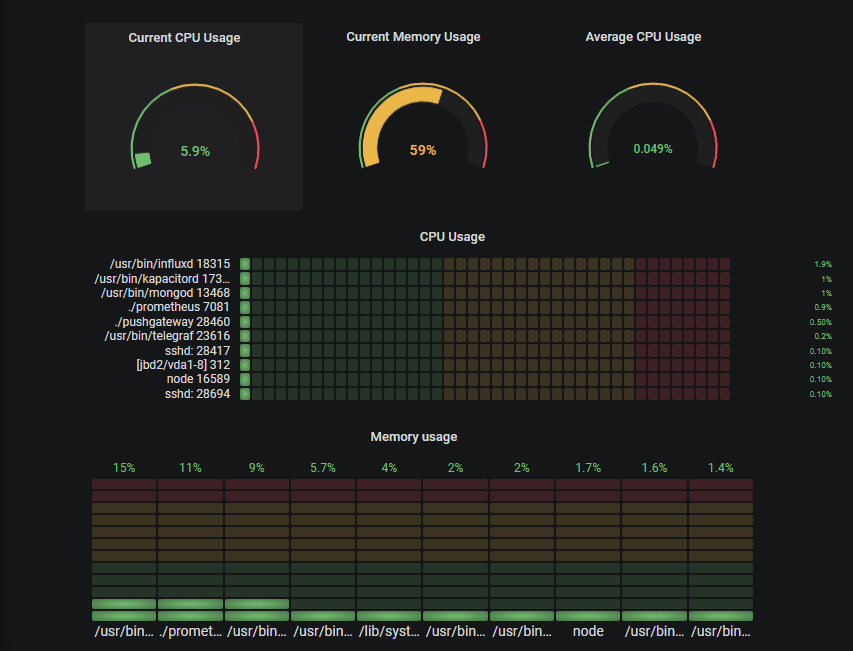
这篇入门文章旨在如何为 Linux 系统管理员创建一个完整的监控仪表盘
该仪表盘会展示完全可定制并且可扩展到分布式架构的多个实例的不同面板。
你将会学到什么
在即将踏入技术旅途之前，让我们快速看下通过阅读这篇文章你将学到哪些东西:
了解在 Unix 系统性能监控方面的最新技术；
怎样安装最新版本的 Prometheus v2.9.2、Pushgateway v0.8.0 以及 Grafana v6.2；
构建一个简单的 bash 脚本用来导出指标项到 Pushgateway；
构建一个完整的 Grafana 仪表盘包括最新的面板例如 ‘Gauge’ 和 ‘Bar Gauge’。
额外内容: 集成 ad-hoc 过滤器跟踪单个进程或实例。
现在我们大体浏览了一下我们将要学习哪些东西，并且没有进一步的要求，让我们介绍一些当前 Unix 系统中目前已有的内容。
Unix 进程监控基础
当提到 Unix 系统进程监控的时候，在你脑海中出现的有好几个选项。
最流行的或许就是 ‘top’ 了。
这个命令在系统管理员中间被广泛使用当系统出现性能瓶颈或许是第一条执行的命令（如果你可以访问它当然就是第一条！）
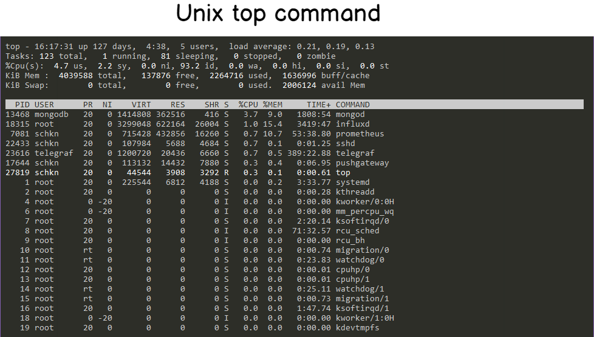
top 命令可读性已经是非常好了，但是仍有一条命令比 top 命令可读性更好：htop。
Htop 提供了与 top 相同的一些功能（CPU、内存、正常运行时间…）但是是以一种彩色并且很友好的方式展示出来的。
Htop 还提供当前系统使用情况的仪表盘
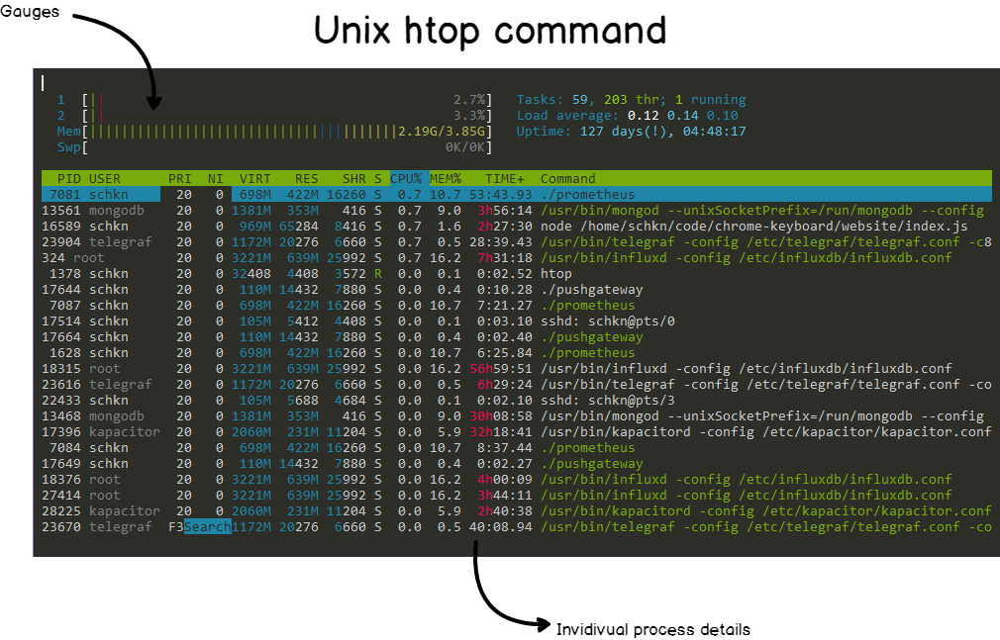
既然已经有这两个命令了，那为什么我们想要构建另一种监控进程的方法呢？
主要原因是系统可用性: 一旦系统过载，你或许没有办法从物理层面或者远程访问实例。
通过外部监控进程，你可以在不需要访问服务器的前提下分析哪个地方出现的问题。
另一个原因就是进程总是通过内核本身被创建以及被杀死。
因此，运行 top 命令你得不到任何信息，当你想要分析什么导致系统出现性能问题时已经为时已晚。
你或许需要挖掘内核日志去查看哪个进程被杀死了。
使用监控仪表盘的话，你可以非常简单的回到过去查看哪个进程导致了这个问题。
现在已知道了为什么我们想构建这样一个仪表盘了，让我们看下为了构建它的架构是什么样的吧。
监控架构的细节
在我们查看我们将要使用的架构之前，我们想要使用一个这样的解决方案:
节省资源: 比如不会消耗我们主机上太多的资源；
易于安装: 不需要太多的时间进行实例化；
可扩展: 如果我们想要监控另一个主机，我们可以快速且高效的实现。
这些特点需要我们在这篇文章中始终需要牢记的。
我们今天将要实践的具体细节是这样的:
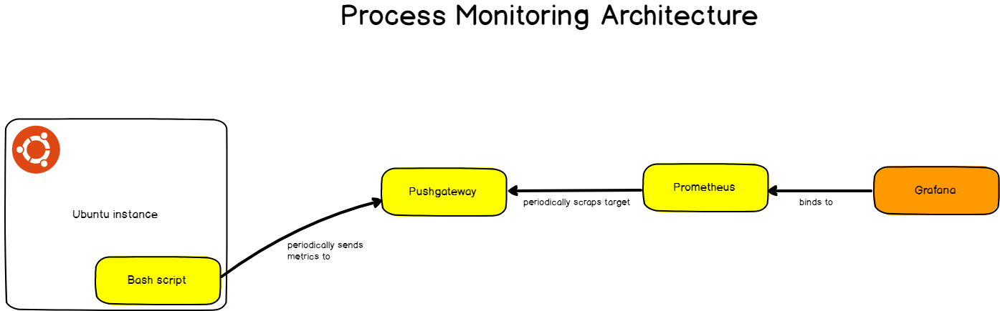
我们的架构使用了四种不同的组件:
一个用来周期性提供指标到 Pushgateway 的 bash 脚本；
Pushgateway: 单个脚本用作目标的指标项缓存；
Prometheus: 实例化用于存储指标项的时间序列数据库。Prometheus 会将 Pushgateway 作为目标，以便检索并存储指标项；
Grafana: 一个仪表盘监控工具通过 PromQL 从 Prometheus 检索数据然后绘制它们。
对于已经非常熟悉 Prometheus 的朋友，你已经知道 Prometheus 从暴露 HTTP 的实例获取指标然后存储它们。
在这篇文章中，bash 脚本的生命周期非常短并且不会给 Prometheus 暴露任何的 HTTP 实例。
这也就是为什么我们需要使用 Pushgateway；为短命任务而设计，Pushgateway 会缓存从脚本中接收的指标并将它们暴露给 Prometheus。
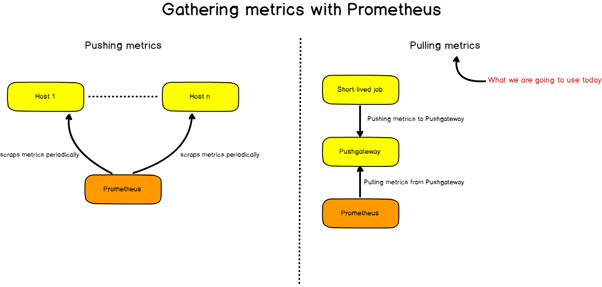
安装不同的工具
现在你已经知道我们应用程序是怎样运行的了，让我们安装这些需要的工具吧。
a – 安装 Pushgateway
为了安装 ** Pushgateway**，运行一个简单的 wget 命令来获取二进制文件。
wget https://github.com/prometheus/pushgateway/releases/download/v0.8.0/pushgateway-0.8.0.linux-amd64.tar.gz
现在你获取到了这个压缩文件，解压，在 pushgateway 目录下运行这个可执行文件。
> tar xvzf pushgateway-0.8.0.linux-amd64.tar.gz
> cd pushgateway-0.8.0.linux-amd64/
> ./pushgateway &
结果是，你的 Pushgateway 会以后台进程的形式启动。
me@schkn-ubuntu:~/softs/pushgateway/pushgateway-0.8.0.linux-amd64$ ./pushgateway &
[1] 22806
me@schkn-ubuntu:~/softs/pushgateway/pushgateway-0.8.0.linux-amd64$ INFO[0000] Starting pushgateway (version=0.8.0, branch=HEAD, revision=d90bf3239c5ca08d72ccc9e2e2ff3a62b99a122e) source="main.go:65"INFO[0000] Build context (go=go1.11.8, user=root@00855c3ed64f, date=20190413-11:29:19) source="main.go:66"INFO[0000] Listening on :9091. source="main.go:108"
干得漂亮！
从那里，Pushgateway 会在 9091 端口上监听接收的指标。
b – 安装 Prometheus
如在 Prometheus 官网上 ‘Getting Started’ 章节讲的那样，请访问 https://prometheus.io/download/ 运行一个简单的 wget 命令从你的系统中获取 Prometheus 压缩包。
wget https://github.com/prometheus/prometheus/releases/download/v2.9.2/prometheus-2.9.2.linux -amd64.tar.gz
现在获取到压缩包之后，解压，切换到主目录:
> tar xvzf prometheus-2.9.2.linux-amd64.tar.gz
> cd prometheus-2.9.2.linux-amd64/
如之前所述，Prometheus 周期性地获取‘目标’然后收集指标。目标（在这里是 Pushgateway）需要被配置到 Prometheus 配置文件中。
> vi prometheus.yml
在 ‘global’ 部分，编辑 ‘_scrape_interval’ 值减少为 1 秒。
global:
scrape_interval: 1s # Set the scrape interval to every 1 second.
在 ‘_scrape_configs_’ 部分，在 scrape_configs 部分的 targets 下新增一个值。
static_configs:
- targets: ['localhost:9090', 'localhost:9091']
退出 vi，最后运行目录下的 prometheus 可执行文件。
当执行最后的 prometheus 命令 Prometheus 启动。为了确保所有配置都是正确的，你可以访问 http://localhost:9090/graph 查看。
如果你能访问 Prometheus web 控制台，也就证明所有的配置都是正确的。
你也可以在 Web UI 的 ‘Status’ > ‘Targets’ 验证 Pushgateway 是否正确配置为目标。
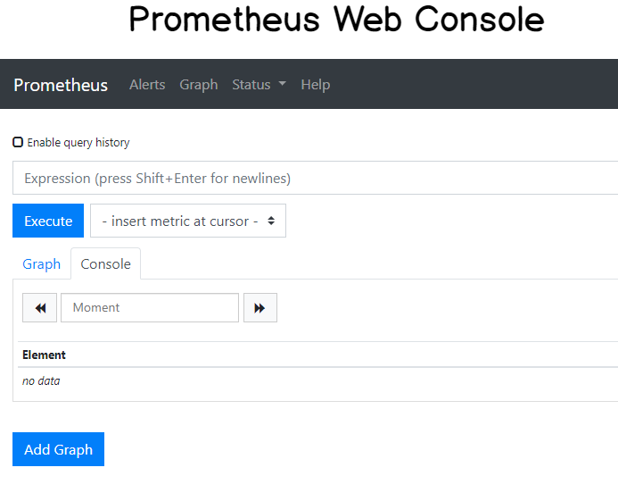
c – 安装 Grafana
最后，我们将要安装 Grafana v6.2。访问 https://grafana.com/grafana/download/beta 。
同之前做的那些一样，运行一个简单的 wget 命令获取它。
> wget https://dl.grafana.com/oss/release/grafana_6.2.0-beta1_amd64.deb> sudo dpkg -i grafana_6.2.0-beta1_amd64.deb
现在你获取到了一个可执行的 deb 文件，grafana 会以服务的方式运行在你的实例上。
你可以通过运行下面的命令验证:
> sudo systemctl status grafana-server
● grafana-server.service - Grafana instance
Loaded: loaded (/usr/lib/systemd/system/grafana-server.service; disabled; vendor preset: enabled)
Active: active (running) since Thu 2019-05-09 10:44:49 UTC; 5 days ago
Docs: http://docs.grafana.org
你可以查看 http://localhost:3000/ 这个是 Grafana Web UI 的默认地址。
现在你已经将 Grafana 安装到你的实例上了，我们需要配置 Prometheus 作为数据源。
你可以这样配置数据源:
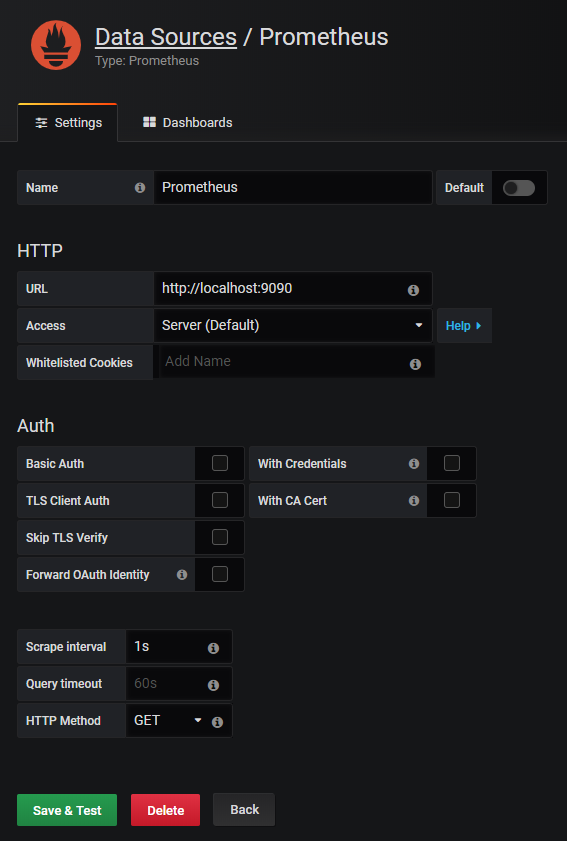
就是它！
点击 ‘Save and Test’ 确保你的数据源运行正常。
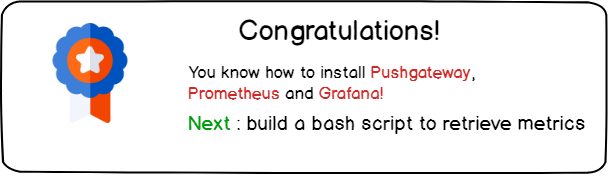
构建脚本以检索指标
下一个任务是构建一个简单的脚本用来检索指标比如单个进程的 CPU 使用率以及内存使用率。
你的脚本可以定义为一个 cron 任务这样将会每秒运行一次。
为了执行这个任务，你有多个候选。
你可以每秒运行 top 命令，使用 sed 解析它然后发送指标给 Pushgateway。
麻烦的部分是 top 运行多次，提供一个这段时间的平均指标值。这不是我们真正想要的。
取而代之的，我们将会使用 ps 命令为了更精确的话使用 ps aux 命令。
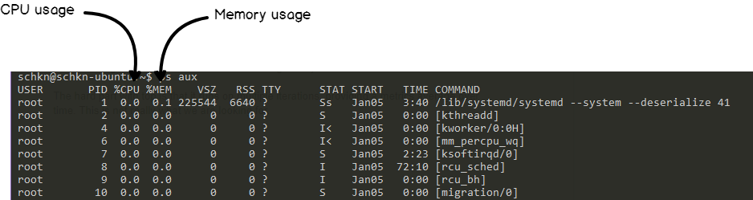
该命令暴露了单独的 CPU 以及内存使用率以及运行后台实际运行的命令。
这就是我们想要的。
但是在继续后面的工作之前，让我们看看 Pushgateway 期望输入的内容。
Pushgateway，非常像 Prometheus，使用键值对运行: 键描述了监控的指标然后值就不言自明了。
这里有一些例子:
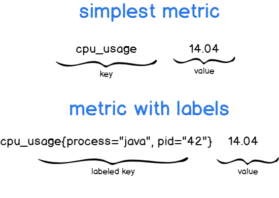
你可以说，第一个表格简单描述为 CPU 使用率，但是第二个描述了 java 进程的 CPU 使用率。
添加标签是指定你的指标描述更准确的一种方法。
现在我们有这个信息了，我们需要构建最终的脚本。
提醒一下，我们的脚本将会使用 ps aux 命令运行，解析结果，转换并通过我们之前描述的语法发送给 Pushgateway 。
创建一个脚本文件，赋给一些权限然后切换至该位置。
> touch better-top
> chmod u+x better-top
> vi better-top
脚本如下:
如果你想用作收集内存使用率，将 ‘cpu_usage’ 标签修改为 ‘memory_usage’ 然后 $3z 改为 $4z
#!/bin/bash
z=$(ps aux)
while read -r z
do
var=$var$(awk '{print "cpu_usage{process=\""$11"\", pid=\""$2"\"}", $3z}');
done <<< "$z"
curl -X POST -H "Content-Type: text/plain" --data "$var
" http://localhost:9091/metrics/job/top/instance/machine
所以这个脚本干了些啥呢？
首先，它执行了我们之前说的 ps aux 命令。
如同你所说的那样，这个脚本收集进程所有的指标但是它只执行一次。
现在我们使用 sleep 只是简单的每秒运行一次。
然后，你可以自由创建一个服务使用计时器每秒执行一次（至少使用 systemd）。
对 systemd 好奇？我创建了一个关于使用 Chronograf 监控它们的完整教程
> while sleep 1; do ./better-top; done;
现在我们的指标发送到 Pushgateway 了，让我们看看是否我们可以在 Prometheus Web 控制台看到它们。
访问 http://localhost:9090/ 。在 ‘Expression’ 位置，简单输入 ‘cpu_usage’。你可以在浏览器上看到所有的指标。
恭喜你！你的 CPU 指标被存储到 Prometheus TSDB 中了。
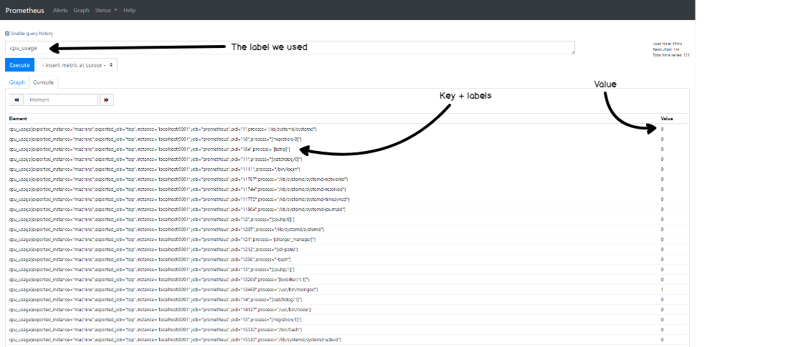
使用 Grafana 构建一个酷炫的仪表盘
现在我们的指标存储到 Prometheus 了，我们需要简单的构建一个 Grafana 仪表盘目的是为了可视化它们。
为了看起来舒服一些，我从 1 到 4 标注了最终的仪表盘。
这些与这个章节的各个子章节匹配。如果你只对其中的一些面板感兴趣，就直接跳转到匹配的子章节即可。
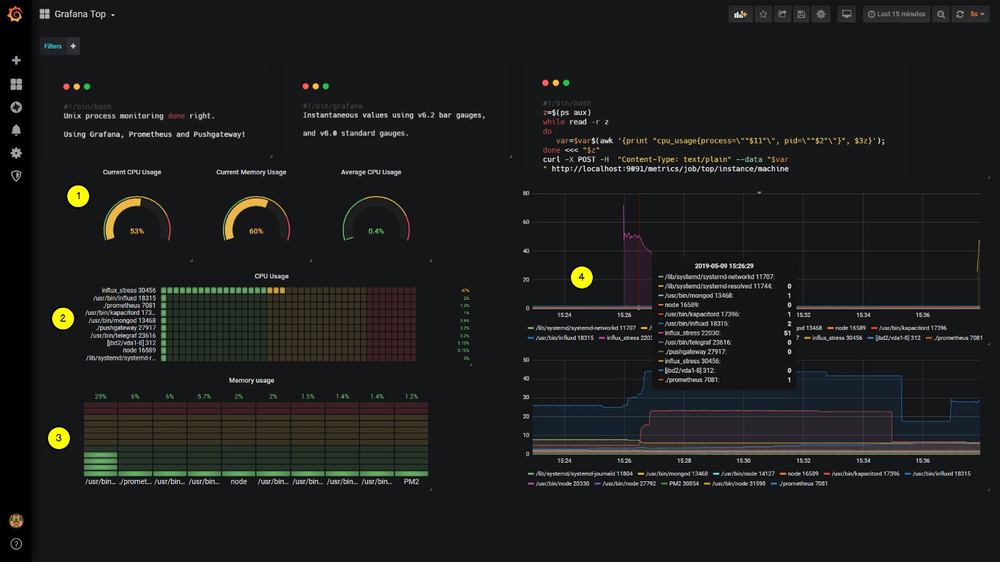
1– 构建圆形仪表盘
这个是我们面板中圆形仪表盘的特写。
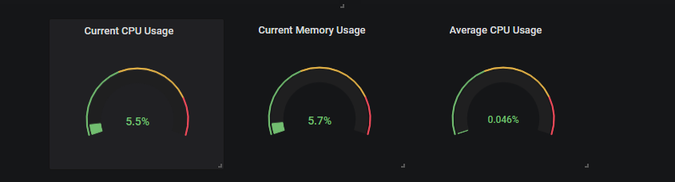
目前，我们主要专注于进程的 CPU 使用率，也可以简单的映射到内存使用率。
通过这些面板，我们将要跟踪两个指标: 所有进程当前的 CPU 使用率以及平均 CPU 使用率。
为了检索这些指标，我们将在我们的 Prometheus 实例上执行 PromQL 队列。
所以.. 什么是 PromQL 呢？
PromQL 是为 Prometheus 而设计的队列语言。
类似于使用 InfluxQL（或者是 IFQL）的 InfluxDB 实例，PromQL 队列查询可以使用求和、取平均值以及标准差之类的函数来汇总数据。
语法使用起来非常简单我们将会在面板中使用它。
a – 检索当前总体的 CPU 使用率
为了检索当前的总体 CPU 使用率，我们将会使用 PromQL sum 函数。
在给定的时间内，我们总体的 CPU 使用率就是简单的各个使用率的总和。
以下是配置清单:
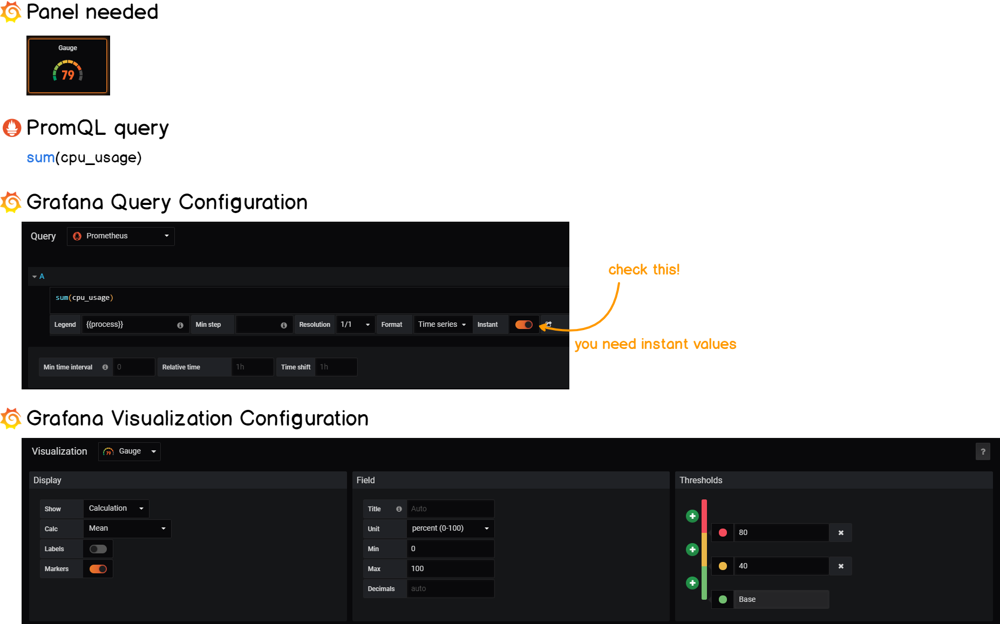
b – 检索平均 CPU 使用率
平均 CPU 使用率不需要太多的工作，你只需要简单的使用 PromQL 的 avg 函数。你可以通过下面的配置清单查看到。
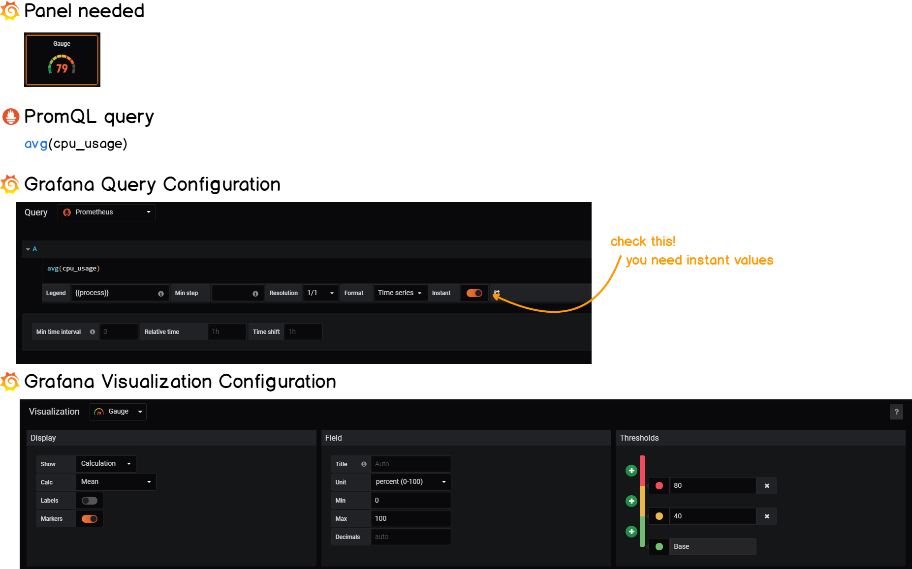
2 – 构建水平仪表盘
水平仪表盘是最新版 Grafana v6.2 版本的一部分。
我们的目标是显示 10 个消耗最系统的进程。
为了实现这个，我们将会使用 topk 函数检索一个指标项的前 k 个元素。
类似于之前所做的工作，我们将会定义几个阈当消耗太多资源的时候得到通知。
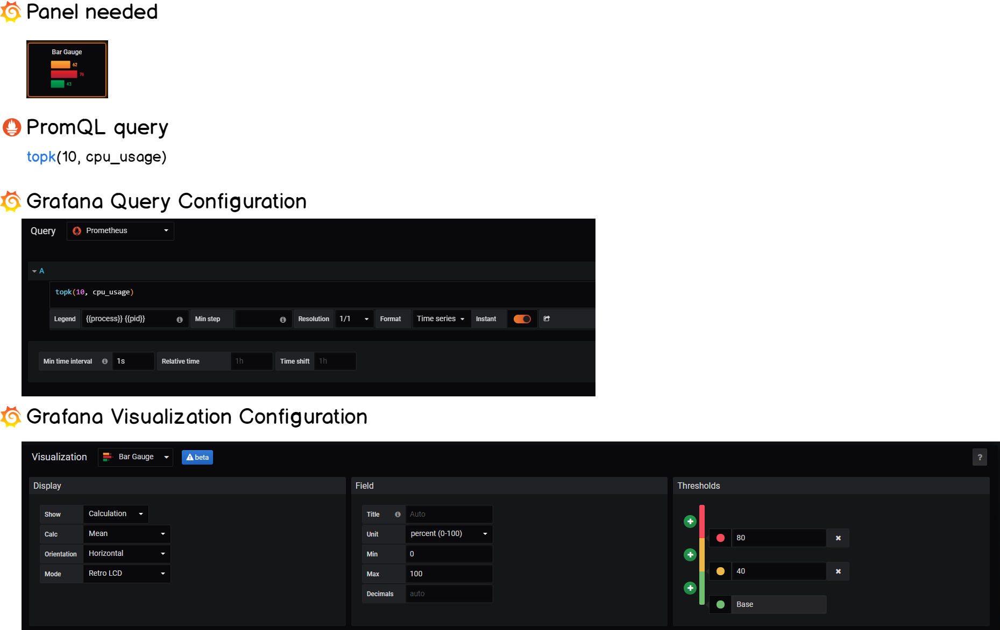
3 – 构建垂直仪表盘
垂直仪表盘与水平仪表盘类似，我们只需要在 Grafana 的可视化面板调整方向参数即可。
同样，我们将会使用这个面板监控内存使用率因此队列会有轻微的不同。
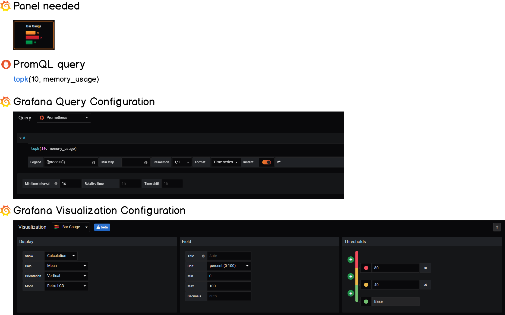
棒极了！我们目前的进度好极了，还剩一个面板啦。
4 – 构建线性图
线性图在 Grafana 已经有很长时间了我们将会使用它来展示这段时间内进程演变的历史。
这个图表在以下情况下特别方便:
过去曾经发生过故障想要调查一下哪些进程在这个过程中是运行的。
一些进程没有运行但是你想查看它们之前的一些行为。
当提到错误排查的时候，真的需要这一整篇文章（特别似乎最近 Grafana Loki 新增的内容）。
好的，这是最后一个配置清单！
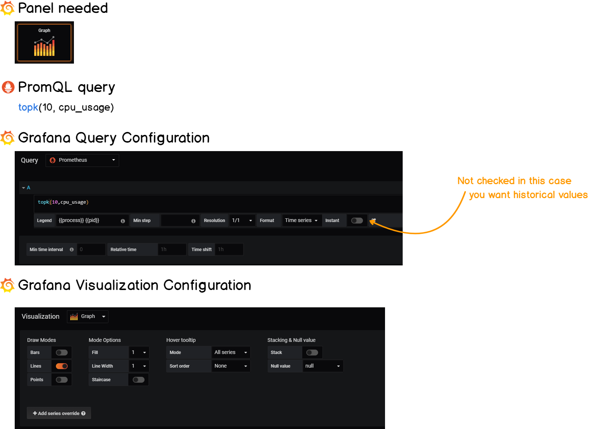
到这里，我们已经设置了最后的仪表盘上所有需要的面板了。
你可以以自己喜欢的方式安排它们或者从我们构建的方法中汲取灵感。
额外内容: 使用 ad hoc filters 探索数据
实时数据看起来很有意思 – 但是当你探索你的这些数据时才是真正的价值所在。
在这部分额外内容里面，我们不会使用 ‘Explore’ 函数（或许在另一篇文章会说一下呢？），我们将要使用 ad hoc filters。
使用 Grafana，你可以定义一个图表相关的变量。对变量来说有许多不同的选项: 比如你可以为你的数据源定义一个变量可以允许动态切换一个队列中的数据源。
我们的话，将会使用简单的 ad hoc filters 来探索数据。
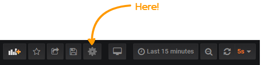
从这个地方，点击左边菜单的 ‘Variables’ ，然后点击 ‘New’。
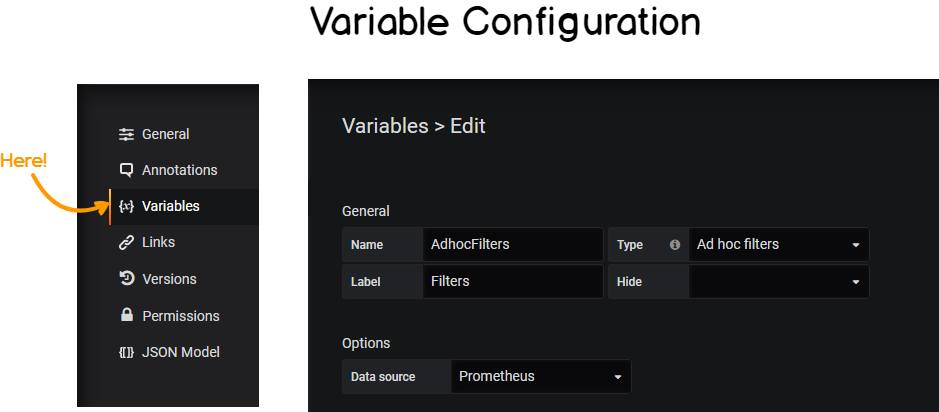
如上图所示，ad hoc filters 自动应用到仪表盘中并指向 Prometheus 的数据源。回到我们的仪表盘上。
看一下仪表盘左上角的地方。
现在假如你想在系统中查看某个进程的情况: 以 Prometheus 为例。
简单的切换到过滤器然后可以看到仪表盘根据过滤器进行了更新。
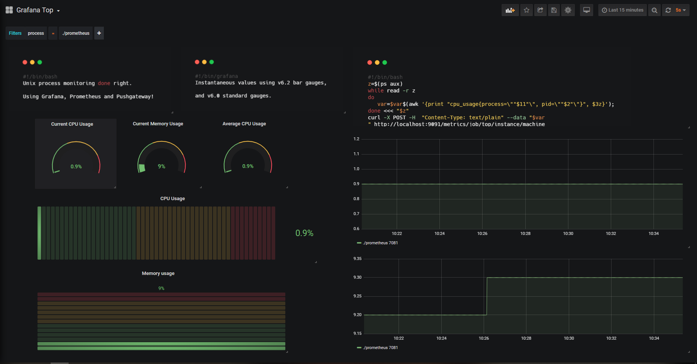
现在你可以直观的看到 Prometheus 在你的实例上是怎样的了。
甚至可以看过去这个进程做了什么，与它的 pid 无关！
快速总结一下
这篇文章中，你应该能更好的理解 Prometheus 和 Grafana 提供哪些功能了。
你也知道了给一个实例配置一个完整的监控仪表盘，但是这只是扩展规模以及监控 Unix 实例整个集群的一小步。
DevOps 监控是一个非常有趣的话题 – 但是如果你做错了一些东西会成为你的梦魇。
这也就是我们写这篇文章构建这些仪表盘的原因所在: 帮助你尽可能全面的使用这些工具所能提供功能。
我们相信出色的技术通过有用的展示可以得到提升。
我写了相同的文章，如果你喜欢这篇文章，可以再读一下其他的文章:
在那之前，开心如常。